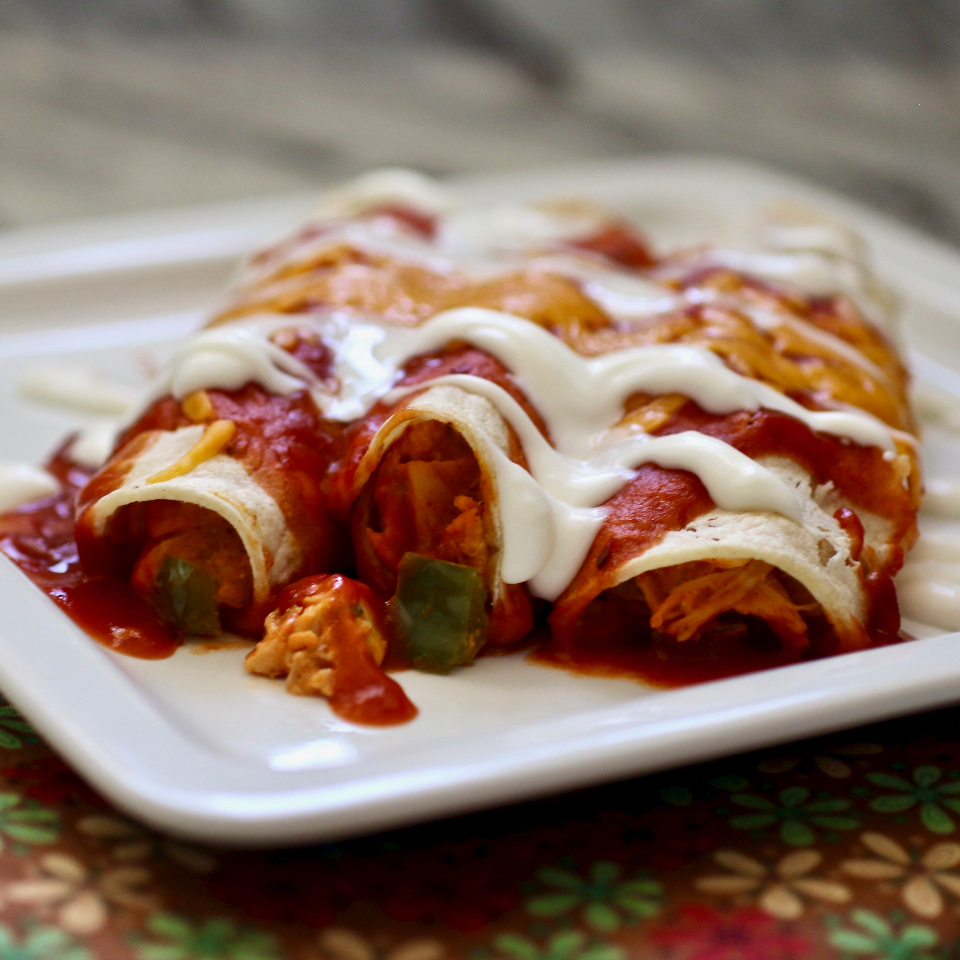

Chicken Enchiladas

Description
This is a quick and easy recipe that is so delicious. Good for quick suppers that still leave you satisfied.
Ingredients (For a Serving of 8)
- 4 skinless, boneless chicken breast halves
- 1 onion, chopped
- 1/2 pint sour cream
- 1 cup shredded Cheddar cheese
- 1 tablespoon dried parsley
- 1/2 teaspoon dried oregano
- 1/2 teaspoon ground black pepper
- 1/2 teaspoon salt (Optional)
- 1 (15 ounce) can tomato sauce
- 1/2 cup water
- 1 tablespoon chili powder
- 1/3 cup chopped green bell pepper
- 1 clove garlic, minced
- 8 (10 inch) flour tortillas
- 1 (12 ounce) jar taco sauce
- 3/4 cup shredded Cheddar cheese
Steps
- Preheat oven to 350 degrees F (175 degrees C).
- In a medium, non-stick skillet over medium heat, cook chicken until no longer pink and juices run clear. Drain excess fat. Cube the chicken and return it to the skillet. Add the onion, sour cream, Cheddar cheese, parsley, oregano and ground black pepper. Heat until cheese melts. Stir in salt, tomato sauce, water, chili powder, green pepper and garlic.
- Roll even amounts of the mixture in the tortillas. Arrange in a 9x13 inch baking dish. Cover with taco sauce and 3/4 cup Cheddar cheese. Bake uncovered in the preheated oven 20 minutes. Cool 10 minutes before serving.